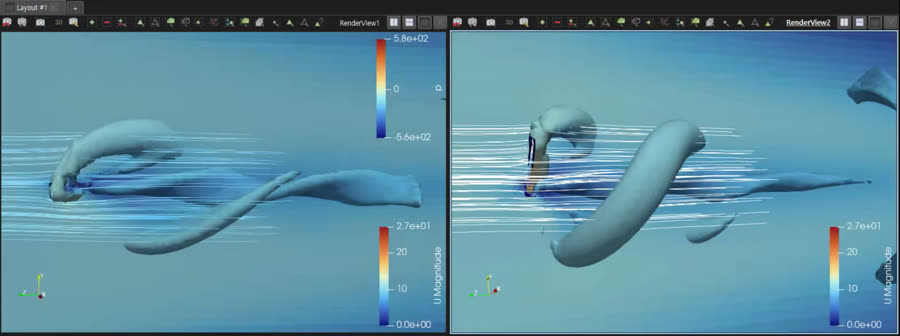
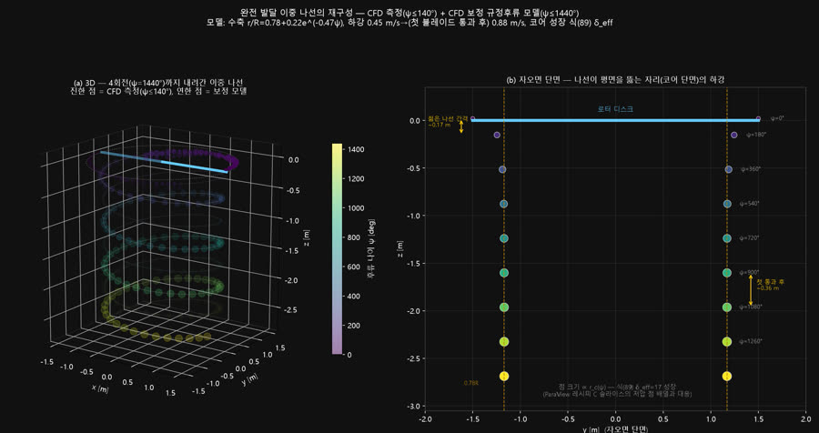
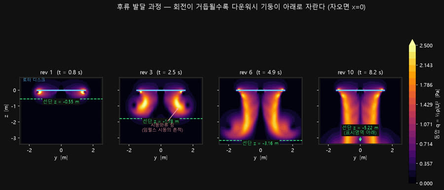
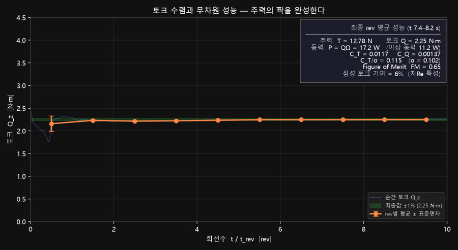

OpenFOAM 기반으로 프로펠러·로터의 비정상(unsteady) 유동을 해석하고, 회전이 만들어내는 후류(wake)를 정량적으로 시각화하는 연구를 수행하고 있습니다. GemFan 프로펠러 AMI 회전격자 해석에서 시작해 RBWB(로터-BWB) 형상의 다회전 호버링 해석까지 확장했고, 실외 로터 스탠드 실험으로 해석과 실측을 연결하고 있습니다.




해석 결과를 실측과 비교하기 위해, 로터를 테스트 스탠드에 장착해 실외 회전 실험을 수행했습니다.
이 연구는 무인기(UAV) 공력 설계의 기반이 되는 회전익 유동의 물리적 이해를 목표로 하며, 시뮬레이션(해석)과 실험(실측)을 오가며 검증하는 연구 방식을 훈련하는 과정입니다.